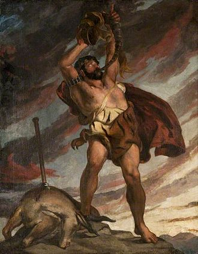
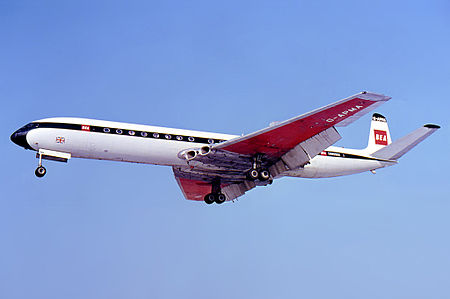
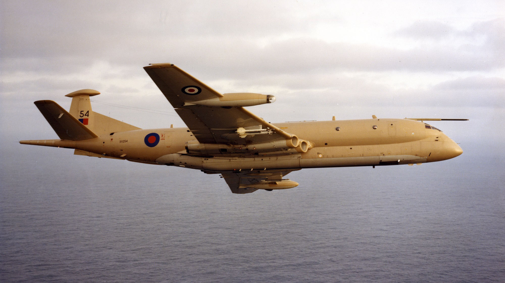
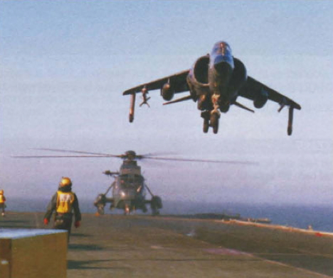
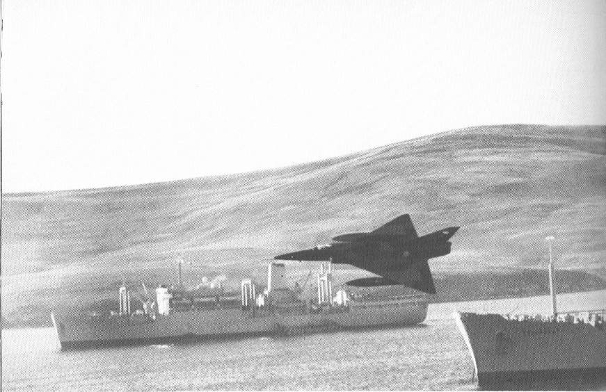
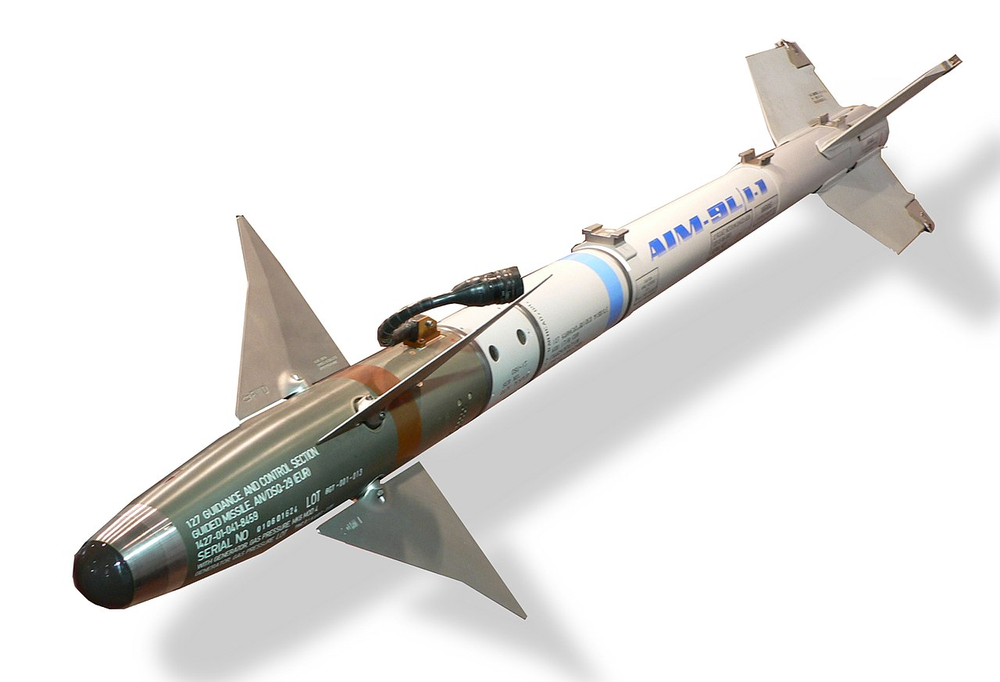
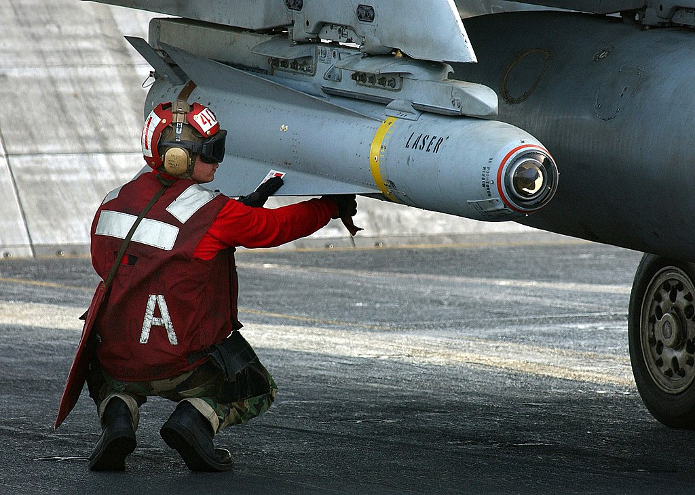
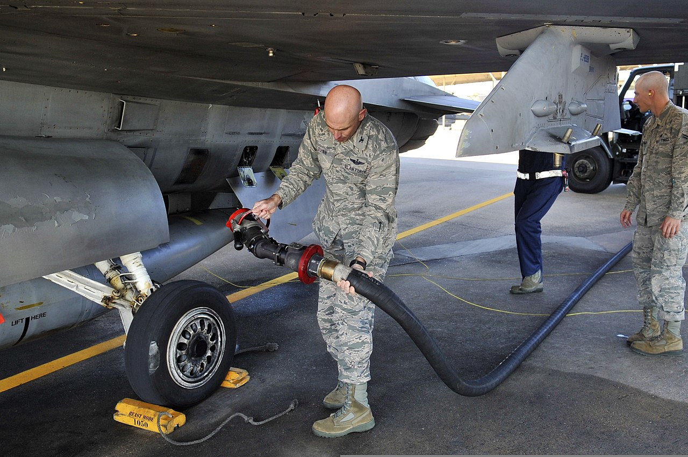
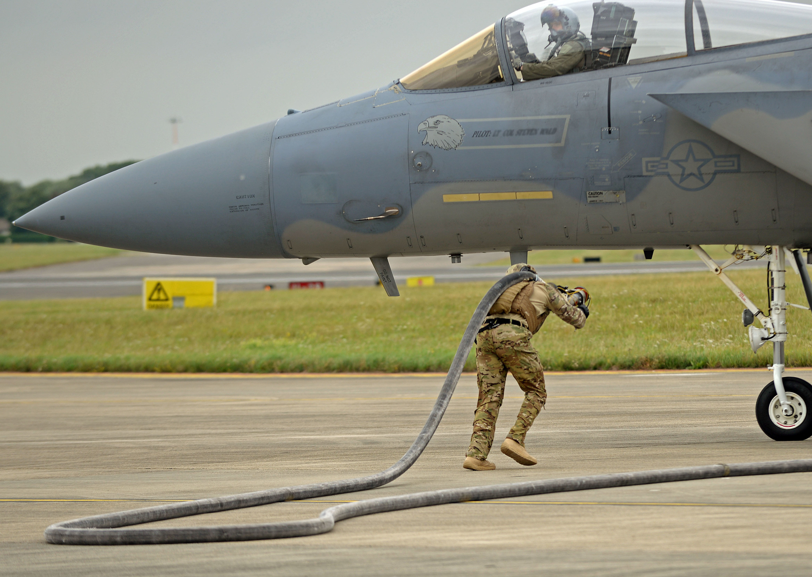

포클랜드 전쟁 잡담 (11/25)
게시: 2021-11-25T06:30:26+09:00
<거대한 사냥꾼의 최후> 니므롯(Nimrod)은 구약 창세기에 나오는 인물로서 노아의 손자이자 거대하고 강력한 사냥꾼(사진1). 바벨탑을 짓기 시작한 왕으로 표현되기도 하는데, 영국 공군이 1969년 도입한 Hawker Siddeley사의 해상정찰기 이름도 Nimrod. 대개의 해상정찰기들이 그러듯 님로드도 1952년 최초 도입된 de Havilland Comet이라는 여객기(사진2)를 기초로 만듬. 그러나 워낙 오래된 기종이다보니 포클랜드 전쟁 때 아르헨티나 공군의 B-707 해상정찰기를 만난 님로드가 (아무 공대공 무장이 없음에도) 707을 추격하려 했으나 속도가 딸려 추격을 포기할 정도. 그러나 이때 경험을 바탕으로 님로드에도 공대공 무장을 달자고 하여 결국 사이드와인더를 장착 (사진3). 이렇게 낡은 기체였지만 WW2 이후 몰락한 영국의 신세 덕에 총 49기 밖에 생산되지 않았으므로 그만큼 노인 학대를 당해 2011년에야 퇴역. 그동안 걸프전은 물론 아프간 전쟁까지 꾸준히 참전하며 혹사 당함. 걸프전 때만 해도 그런 노구를 이끌고 위험한 전쟁터를 나선다고 동정을 받아 전투가 시작된 이후에는 상대적으로 안전한 야간 비행에만 투입되고 주간 정찰 비행은 미해군의 Lockheed P-3 Orion이 수행. 그러다 아프간 전쟁 중이던 2006년 공중 폭발 사고로 14명의 승무원이 모두 사망. 이것이 포클랜드 전쟁 이후 영국군이 한번에 가장 많이 사망한 비극이 됨. 마침내 2011년 퇴역. 그러나 님로드의 가장 큰 공적은 넓은 영국의 배타적 경제수역(EEZ)를 순찰돌며 외국 어선 잡아내고 조난자 탐색도 하고 영국의 해상 유전들을 돌봤다는 점. 1970년대 아이슬란드와 벌어진 소위 '대구 전쟁' 때도 맹활약.
  
<남자가 2발 가지고 올라갔으면> 사진은 1982년 5월 24일 포클랜드 인근 HMS Hermes에서 CAP(Combat Air Patrol)을 치러 나갔다가 공격해온 아르헨티나 공군의 Dagger (미라쥬의 이스라엘 버전, 사진2)를 AIM-9L Sidewinder 미사일로 격추시키고 돌아오는 Dave Smith 대위의 Harrier. 왼쪽 날개 밑에만 Sidewinder가 달려있는 것이 보임. 포클랜드 전쟁에서 해리어 전투기들이 기대 밖의 큰 전공을 세우기는 했으나, 수직 이착륙기의 특성상 많은 무장을 달고 올라가는 것이 쉽지 않아서 실전 상황에서도 저렇게 사이드와인더 달랑 2발 달고 CAP을 쳤던 모양. 그래서 원래 일반적인 전투기들이 사이드와인더를 쏠 때 타겟당 2발씩 쏘는 경우도 많지만, 적기와 실전으로 교전하는 상황에서도 아껴 쓰려고 1발만 쐈던 듯. 몰랐는데 공군에서 가장 힘든 보직 중 하나가 전투기에 미사일과 폭탄을 장착하는 무장병들. 새벽 일찍부터 밤 늦게까지 비행 스케쥴에 따라 일해야 하는데 특히 야간 비행이 있는 날은 밤 늦게 퇴근도 못하고 기다리다가, 귀환한 전투기에서 미사일이나 폭탄 등을 떼내는 것이 무척 힘든 일이라고. 그래서 반농담 반진담으로 무장병들은 그렇게 폭탄과 미사일을 떼면서 '남자가 되어가지고 미사일 달고 올라갔으면 쏘고 내려와야지 쏘지도 못할 거 뭐하러 달고 올라가서...!' 라며 욕을 한다고. 아마 저 Dave Smith 대위도 무장병들로부터 '남자가 째째하게...'라며 뒷담화 좀 들었을 듯.
 
<사이드와인더의 정확성> 앞서 언급한 Dave Smith 대위가 적기에게 사이드와인더를 딱 1발만 쏜 것은 사이드와인더에 대한 신뢰가 깔려있었기 때문. 실제로 HMS Hermes의 해리어 전투기 12대는 전쟁 기간 중 총 1,126회 출격하여 14발의 AIM-9L sidewinder를 발사했는데 그 중 딱 2발만 빗나갔다고. 한 30년 전인가... 미공군 전투기 조종사들에게 설문 조사한 것이 한국 신문에도 일부 기사화 되었는데 전투기 중에서는 F-16이, 공대공 미사일 중에서는 AIM-9 Sidewinder(사진1)가 대형 쌍발전투기(F-15)나 AIM-120 AMRAAM 등을 젖히고 최고의 무기로 뽑혔다고. 반면에 AGM-65 Maverick(사진2)은 최악의 공대지 미사일로... 최근에 어디선가 이라크 전쟁에 참전했던 미공군 조종사들 이야기를 읽었는데, AGM-65D Maverick 미사일이 사막의 뜨거운 모래와 이라크군 탱크 엔진열을 구분을 못해서 처음에는 계속 빗나갔는데, 나중에야 밤에 해가 진 뒤에 쏘면 잘 맞는다는 것을 깨닫고 야간 비행만 열심히 나갔다고... 결과적으로 미공군이 주장한 이라크 전쟁에서의 AGM-65D Maverick의 명중률은 80% 정도. 반면 미해병대가 주장한 수치는 60%.
 
<만땅 vs. 앵꼬> WW2 당시 전투기들은 가솔린을 연료로 썼는데, 그러다보니 많은 항모들이 피격될 때 가솔린이 가득찬 전투기에 불이 붙어서 그게 항모의 침몰까지 이어지는 사례가 종종 발생. 현대의 제트기들은 등유(kerosene) 계열인 JP fuel을 쓰기 때문에 가솔린처럼 위험하지는 않지만 그래도 항공유는 여전히 위험한 인화 물질. 그러므로 평상시 전투기 연료탱크에는 연료를 앵꼬로 비워두는 것이 좋을 것 같지만, 또 생각해보면 언제 비상출격해야 할지 모르는 전투기들의 연료 탱크를 텅 비워두는 것은 매우 어리석은 일. 과연 현대 미해군 항모는 갑판 아래 격납고에 함재기들을 보관할 때 연료를 가득 채워놓을까 비워놓을까? 요약하면 그때그때 다르다고. 최소 몇대는 언제든 출격할 수 있도록 만땅. 그러나 유지보수를 해야하는 함재기들의 연료탱크는 비워두었다가 비행 스케쥴이 잡힌 전날 채워두는 경우가 많다고. 하지만 미공군의 경우엔 철학이 좀 다르다고. 급유는 급유차가 와서 하는데, 보통 전투기가 착륙해서 아직 격납고에 들어가기 전, 활주로에 있을 때 옆에 급유트럭을 대고 채우는 것이 일반적. 그것이 훨씬 편하기 때문이라고. (역시 공군은 빠져가지고!!) 그런데 이 이야기를 적은 전직 미공군 병사 왈, '근데 미해병대 애들은 생각이 다르더라. 걔들은 연료 계열이 아닌 일반 부품에 대해서 정비작업을 할 때도 무조건 연료를 다 빼낸 뒤에 하는 것을 원칙으로 하더라구. 근데 말이야, 사실 연료로 꽉 찬 탱크보다는 텅 빈 탱크가 더 위험한 거거든. 연료로 꽉 찬 탱크에 불이 붙어도 폭발은 하지 않지만, 연료가 거의 없고 유증기만 잔뜩 있는 탱크는 즉각 폭발한단 말이야.' 역시 같은 미군이라도 해군이냐 공군이냐 해병대냐에 따라 생각들이 다 다르구나 싶음. 근데 솔까말 공군이 역시 제일 똑똑한 것 같음.
 